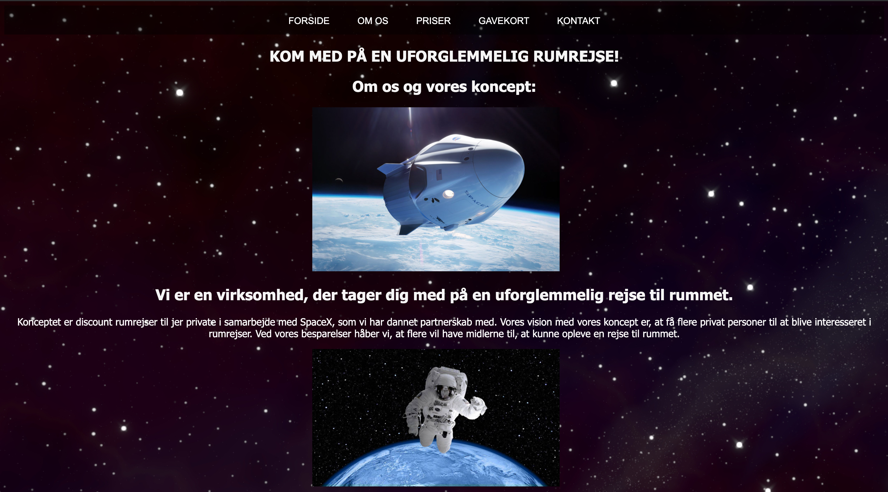
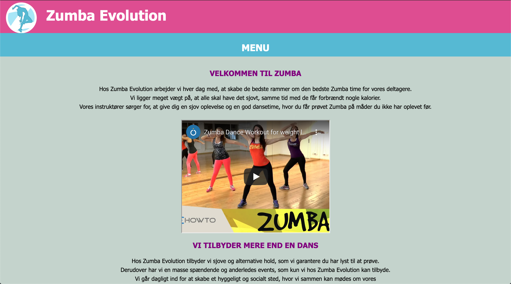
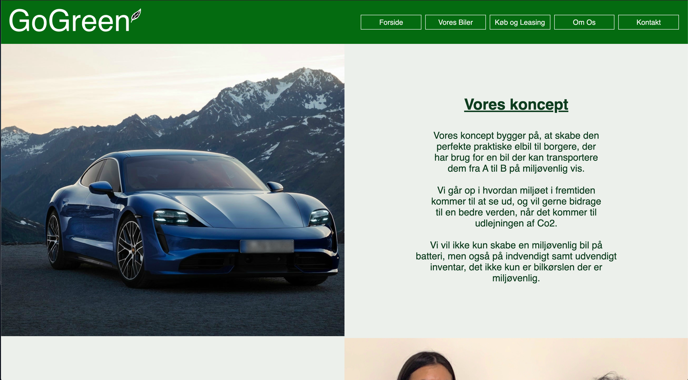

Mine tidligere projekter 👇
Alle disse projekter er projekter lavet på 1. semester på Zealand Erhversakademi i Køge under min uddannelse.
1. semester - Rumrejsen

Vores første tema handlede om at konceptudvikle til et fiktivt rumrejseprogram.
Her var min opgave, at kode siden ''om os''.' Mine tanker omkring designet var at finde en baggrund,
så brugeren meget hurtigt kunne regne ud, hvad siden omhandlede - derfor valgte jeg at hele baggrunden
skulle være et billede af rummet. Jeg valgte at alt tekst skulle være kort og meget præcist beskrevet,
så det ikke ville blive for overskueligt at læse. Hele min tanke var at billederne skulle fortælle historien,
og få brugeren til at få følelsen af, at man gerne vil med på den rejse.
1. semester - Tango

Vores opgave omhandlede, at producere et website for en danseskole, der er målrettet et specifikt brugersegment.
Her var min opgave, at kode ''forsiden''. Mine tanker omkring designet af denne side er hovedsageligt opbygget af farverne rød og sort,
da disse to farver oftest er dem der bliver symboliseret med tango. derudover var det vigtigt for mig,
at bygge forsiden op af en del billeder, da siden omhandler en dans, hvilket kræver en visuel præsentation.
Da tango også er en meget intens dans, valgte jeg at designe siden med mange skarpe kanter.
1. semester - Zumba

Vores opgavede omhandlede, at overtage og forbedre de andres hjemmeside. Her stod jeg for at forbedre ''forsiden''.
Da vi skulle forbedre en andens hjemmeside var mine tanker, at jeg skulle ligge en youtube video op af Zumba,
for at man kunne få en fornemmelse af, hvilken dans vi havde med at gøre. Dette var der ikke på det forrige design,
der var blot billeder. Teksterne blev gjort længere, da der på forrige side kun var en enkelt linje,
som ikke beskrev tingene godt nok. Derudover gjorde jeg billederne mindre, så de var mere i fokus.
1. semester - Bilkoncept

Vores opgavede omhandlede at udvikle et koncept som vedrører branding af biler, og udvikle en salgsplatform.
Her stod jeg for siden ''om os''. Mine tanker omkring dette design var, at gøre det så simpelt som muligt. Farven grøn er blevet brugt meget,
da det oftest er det folk forbinder med naturen og bæredygtighed, og det var netop det hele vores koncept gik ud på.
Jeg har gjort brug af mindre men større tekst, da det skulle være læseligt, men også være skrevet kort og præcist.
Jeg fik derudover lavet en tidslinje i XD over virksomheden.
Mine skjulte talenter 😎
I min fritid har jeg altid haft en stor interesse i, at tage samt redigere billeder. Denne interesse kom allerede da jeg
var helt ung - omkring 14år.
Det har altid bare været en lille hobby, som jeg har lavet i min fritid, når jeg lige havde tiden og lysten.
Nedenstående er et lille smugkig i, hvad jeg har gået og foretaget mig.